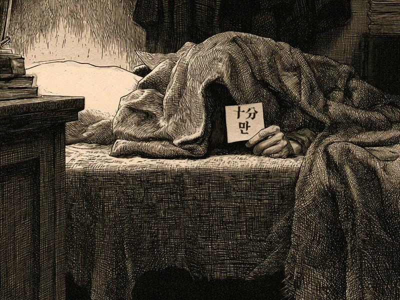
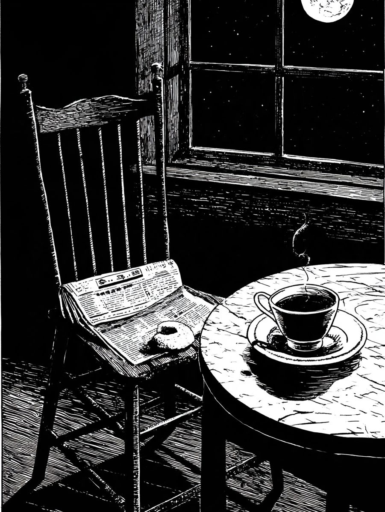
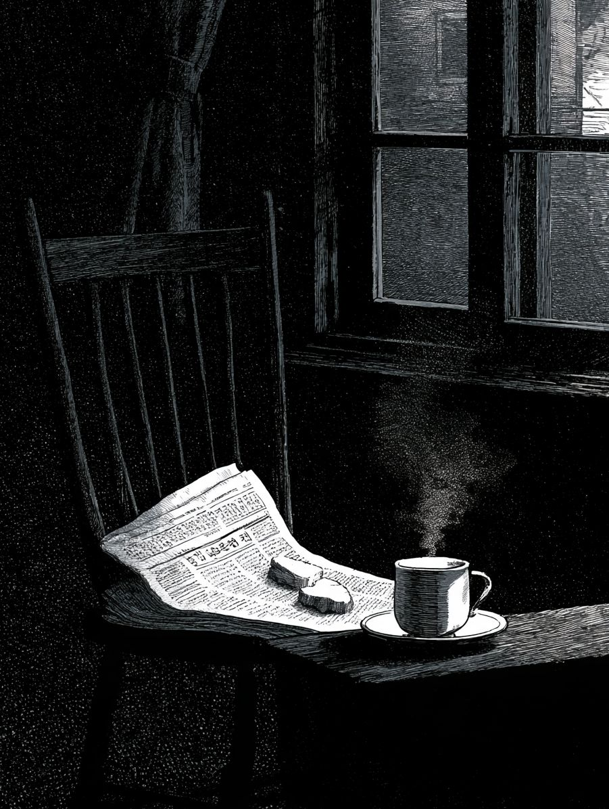

심인일
동료를 차즘


당자의 자리 · 이불이 수상함 (재현)사진
차즘 중
☞ 사진 속 이불을 눌러 보시오
- 나이
- 불문. 단, 자정 넘어 눈이 반짝이는 자
- 인상
- 밤눈이 밝고, 낡은 신문 냄새를 조와함. 차를 물처럼 마심
- 버릇
- 마감 전날이면 행방이 묘연해짐. 마감 당일엔 더 묘연해짐
- 간 곳
- 제이집 제작실로 갓스리라 짐작함. 혹은 이불 속
이 사람을 아시는 이, 혹은 이 사람이 당신이면 본사로 통지하시오. 후사함(후사는 크레딧 한 줄 · 식은 차 한 잔 · 편집장의 고개 끄덕임 한 번)
심인이
독자를 차즘


당자가 두고 간 신문과 떡 (재현)사진
차즘 중
☞ 사진 속 물건을 눌러 단서를 모으시오 · 단서 0/4
- 나이
- 불문. 손가락 하나로 화면을 내릴 줄 아는 자
- 인상
- 밤에 긔사를 끗까지 읽음. 무서운 대목에선 불을 켬
- 마지막 목격
- 본지 삼 면 하단. 「이따 마저 읽어야지」 하고 사라짐
- 바라는 바
- 도라오면 다음 호를 남보다 먼저 배달하리다. 문은 안 두드리겟소
이 사람을 보신 이, 혹은 이 사람이 당신이면 본사로 통지하시오. 후사함(후사는 새 사건 소식 한 통. 광고 편지는 아니오, 맹세하오)
현상 수배 · 광고면 맨 아래 · 마지막 한 장
 그림 · 재현지문 채취 · 대조 불가
그림 · 재현지문 채취 · 대조 불가
※ 심인 광고의 틀(인상 · 간 곳 · 후사함)은 1920~30년대 동아일보 광고란에서 빌렷소. 이 면의 광고는 모두 경성야록이 지어 낸 것이오 (재현). 통지는 화면 시연용이며 실제로 접수되지 안소.